금속재료시험기능사 (2015-10-10 기출문제)
1과목: 금속재료일반
1. 물과 같은 부피를 가진 물체의 무게와 물의 무게와의 비는?
- 비열
- 비중
- 숨은열
- 열전도율
(정답률: 96%)

2. Y 합금의 일종으로 Ti과 Cu를 0.2% 정도씩 첨가한 것으로 피스톤용 재료로 사용되는 합금은?
- 라우탈
- 코비탈륨
- 두랄루민
- 하이드로 날륨
(정답률: 84%)
3. Al-Si계 주조용 합금은 공정점에서 조대한 육각 판상 조직이 나타난다. 이 조직의 개량화를 위해 첨가하는 것이 아닌 것은?
- 금속납
- 금속나트륨
- 수산화나트륨
- 알칼리염류
(정답률: 77%)
4. 금속의 소성변형에서 마치 거울에 나타나는 상이 거울을 중심으로 하여 대칭으로 나타나는 것과 같은 현상을 나타내는 변형은?
- 쌍정변형
- 전위변형
- 벽계변형
- 딤플변형
(정답률: 96%)
5. 다음의 조직 중 경도가 가장 높은 것은?
- 시멘타이트
- 페라이트
- 오스테나이트
- 트루스타이트
(정답률: 85%)
6. 다음 중 산과 작용하였을 때 수소 가스가 발생하기 가장 어려운 금속은?
- Ca
- Na
- Al
- Au
(정답률: 81%)
7. 황동의 합금 조성으로 옳은 것은?
- Cu=Ni
- Cu+Sn
- Cu+Zn
- Cu+Al
(정답률: 82%)
8. 게이지용강이 갖추어야 할 성질을 설명한 것 중 옳은 것은?
- 팽창계수가 보통 강보다 커야 한다.
- HRC 45 이하의 경도를 가져야 한다.
- 시간이 지남에 따라 치수 변화가 커야 한다.
- 담금질에 의하여 변형이나 담금질 균열이 없어야 한다.
(정답률: 82%)
9. 태양열 이용 장치의 적외선 흡수재료, 로켓 연료 연소 효율 향상에 초미립자 소재를 이용한다. 이 재료에 관한 설명 중 옳은 것은?
- 초미립자 제조는 크게 체질법과 고상법이 있다.
- 체질법을 이용하면 청정 초미립자 제조가 가능하다.
- 고상법은 균일한 초미립자 분체를 대량 생산하는 방법으로 우수하다.
- 초미립자의 크기는 100nm의 콜로이드(colloid) 입자의 크기와 같은 정도의 분체라 할 수 있다.
(정답률: 76%)
10. 스텔라이트(stellite)에 대한 설명으로 틀린 것은?
- 열처리를 실시하여야만 충분한 경도를 갖는다.
- 주조한 상태 그대로를 연삭하여 사용하는 비철합금이다.
- 주요 성분은 40~55%Co, 25~33%Cr, 10~20%W. 2~5%C, 5%Fe이다.
- 600℃ 이상에서는 고속도강보다 단단하며, 단조가 불가능하고, 충격에 의해서 쉽게 파손된다.
(정답률: 60%)
11. 용강 중에 기포나 편석은 없으나 중앙 상부에 큰 수축공이 생겨 불순물이 모이고, Fe-Si, Al분말 등의 강한 탈산제로 완전 탈산한 강은?
- 킬드강
- 캡드강
- 림드강
- 세미킬드강
(정답률: 92%)
12. 용융 금속의 냉각곡선에서 응고가 시작되는 지점은?
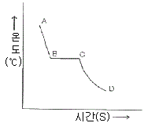
- A
- B
- C
- D
(정답률: 88%)
13. 10~20%Ni, 15~30%Zn에 구리 약 70%의 합금으로 탄성재료나 화학기계용 재료로 사용되는 것은?
- 양백
- 청동
- 엘린바
- 모넬메탈
(정답률: 70%)
14. 베어링(bearing)용 합금의 구비조건에 대한 설명 중 틀린 것은?
- 마찰계수가 적고 내식성이 좋을 것
- 충분한 취성을 가지며 소착성이 클 것
- 하중에 견디는 내압력과 저항력이 클 것
- 주조성 및 절삭성이 우수하고 열전도율이 클 것
(정답률: 82%)
15. 강과 주철을 구분하는 탄소의 함유량은 약 몇 %인가?
- 0.1%
- 0.5%
- 1.0%
- 2.0%
(정답률: 87%)
16. 다음 투상도 중 물체의 높이를 알 수 없는 것은?
- 정면도
- 평면도
- 우측면도
- 좌측면도
(정답률: 92%)
17. 도면에서 Ⓐ로 표시된 해칭의 의미로 옳은 것은?
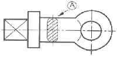
- 특수 가공 부분이다.
- 회전 단면도이다.
- 키를 장착할 홈이다.
- 열처리 가공 부분이다.
(정답률: 76%)
18. 다음과 같은 제품을 3각법으로 투상한 것 중 옳은 것은? (단, 화살표 방향을 정면도로 한다.)
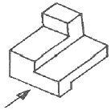
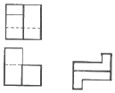
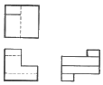
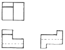
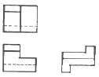
(정답률: 80%)
19. 반복 도형의 피치의 기준을 잡는데 사용되는 선은?
- 굵은 실선
- 가는 실선
- 1점 쇄선
- 가는 2점 쇄선
(정답률: 62%)
20. 물품을 그리거나 도안할 때 필요한 사항을 제도 기구 없이 프리 핸드(free hand)로 그린 도면은?
- 전개도
- 외형도
- 스케치도
- 곡면선도
(정답률: 93%)
2과목: 금속제도
21. 가공면의 줄무늬 방향 표시기호 중 기호를 기입한 면의 중심에 대하여 대략 동심원인 경우 기입하는 기호는?
- X
- M
- R
- C
(정답률: 67%)
22. 도면의 척도에 대한 설명 중 틀린 것은?
- 척도는 도면의 표제란에 기입한다.
- 척도에는 현척, 축척, 배척의 3종류가 있다.
- 척도는 도형의 크기와 실물 크기와의 비율이다.
- 도형이 치수에 비례하지 않을 때는 척도를 기입하지 않고, 별도의 표시도 하지 않는다.
(정답률: 87%)
23. 다음 중 치수보조선과 치수선의 작도 방법이 틀린 것은?
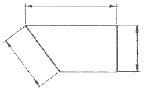
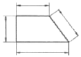
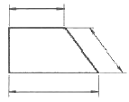
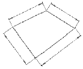
(정답률: 80%)
24. 도면 치수 기입에서 반지름을 나타내는 치수 보조기호는?
- R
- t
- ø
- SR
(정답률: 81%)
25. 치수 공차를 구하는 식으로 옳은 것은?
- 최대 허용치수-기준치수
- 허용한계치수-기준치수
- 최소 허용치수-기준치수
- 최대 허용치수-최소 허용치수
(정답률: 83%)
26. KS의 부문별 기호 중 기계 기본, 기계요소, 공구 및 공작기계 등을 규정하고 있는 영역은?
- KS A
- KS B
- KS C
- KS D
(정답률: 80%)
27. 스퍼기어의 잇수가 32이고 피치원의 지름이 64일 때 이 기어의 모듈값은 얼마인가?
- 0.5
- 1
- 2
- 4
(정답률: 89%)
28. 빛 대신 파장이 짧은 전자선을 이용하면 높은 배율의 상을 관찰할 수 있다. 짧은 전자선을 이용할 수 있는 전자 현미경의 기호로 옳은 것은?
- 투과전자 현미경→SEM
- 투과전자 현미경→TEM
- 주사전사 현미경→TEM
- 주사전자 현미경→OMS
(정답률: 65%)
29. 금속현미경 조직검사 과정으로 옳은 것은?
- 시편채취→마운팅→연마→부식→건조→검사
- 시편채취→마운팅→부식→연마→건조→검사
- 시편채취→연마→마운팅→부식→검사→건조
- 시편채취→검사→마운팅→연마→건조→부식
(정답률: 71%)
30. 담금질 효과를 높이며, 뜨임 취성을 방지하기 위한 합금강의 첨가 원소는?
- Ni
- Mo
- Mn
- Si
(정답률: 65%)
31. 전단응력(τ)과 전단 변형률(γ)은 탄성한계내에서 비례하여 τ/γ=G가 된다. 이 때 G가 의미하는 것은?
- 항복강도
- 탄성계수
- 강성계수
- 포아송 비
(정답률: 54%)
32. 재료에 압축력을 가하였을 때 이에 견디는 저항력으로 측정할 수 있는 것은?
- 연신율
- 부식한도
- 접촉마모
- 탄성계수
(정답률: 76%)
33. 황이 강의 외주부로부터 중심부로 향하여 감소하여 분포되고, 외주부보다 중심부 방향으로 착생도가 낮게 된 형태의 편석은?
- 중심부편석
- 주상편석
- 점상편석
- 역편석
(정답률: 63%)
34. 방사선투과시험에서 X-선 흡수의 메카니즘과 가장 관계가 먼 것은?
- 광전효과
- 공진투과
- 전자쌍생성
- 콤프튼산란
(정답률: 48%)
35. 펄스 반사법으로 초음파 탐상 시험을 할 때, 흠집 에코를 나타내는 기호는?
- T
- F
- B
- S
(정답률: 58%)
36. 평행부의 지름이 14mm인 인장시험편을 사용하여 인장 시험을 한 결과, 항복점의 하중이 4320kgf, 최대 하중이 6590kgf이었을 때 인장강도 값은 약 kgf/mm2인가?
- 28.1kgf/mm2
- 42.8kgf/mm2
- 98.3kgf/mm2
- 149.7kgf/mm2
(정답률: 51%)
37. 강에서 설퍼프린트 시험을 하는 가장 큰 목적은?
- 강재 중의 표면 결함을 조사하는 것이다.
- 강재 중의 비금속 개재물을 조사하는 것이다.
- 강재 중의 환원물의 분포상황을 조사하는 것이다.
- 강재 중의 황화물의 분포상황을 조사하는 것이다.
(정답률: 72%)
38. 조직량을 측정함으로써 소재의 건정성, 조직량에 의한 기계적 성질의 유추 해석이 가능한 조직량 측정 시험의 방법이 아닌 것은?
- 점의 측정법
- 원의 측정법
- 직선의 측정법
- 면적 측정법
(정답률: 59%)
39. 쇼어 경도 시험법의 특징이 아닌 것은?
- 시험기가 소형이므로 휴대하기 간편하다.
- 시험편에 찍힌 흔적을 거의 남기지 않는다.
- 탄성률 차이가 큰 재료의 측정에 적당하다.
- 지시형으로 측정 결과를 바로 읽을 수 있다.
(정답률: 58%)
40. 두 개 이상의 물체가 서로 접촉하면서 상대운동할 때, 그 접촉면이 감소되는 현상을 시험하는 것은?
- 압축시험
- 마모시험
- 전단시험
- 피로시험
(정답률: 78%)
3과목: 금속재료조직 및 비파괴시험
41. 고온에서 작은 응력에서도 장시간 작용하면 시간 경과에 따라 스트레인이 증가되는 것을 이용한 시험법은?
- 탄성비례시험
- 응력피로시험
- 크리프(Creep)시험
- 커핑(Cupping)시험
(정답률: 73%)
42. 강철의 불꽃시험 방법에 관한 시험의 통칙 중 틀린 것은?
- 시험은 항상 동일한 기구를 사용하고, 동일 조건으로 하여야 한다.
- 시험품을 그라인더에 누르는 압력은 가능한 한 같도록 하여야 한다.
- 시험을 할 때에는 바람이 있어야 하며, 특히 바람 방향으로 불꽃을 방출시켜야 한다.
- 불꽃은 수평 또는 경사진 윗 방향으로 날리고, 관찰은 전송식 또는 방견식으로 한다.
(정답률: 82%)
43. 후크의 법칙에 의하여 응력과 변형량의 비는 탄성한계 내에서는 일정치가 된다. 이 일정치에 해당되는 것은?
- 영률
- 탄선한도
- 비례한도
- 포아송의 비
(정답률: 49%)
44. 다음 중 시험편을 옳길 때 손으로 잡기에 가장 곤란한 시험법은?
- 마멸시험
- 인장시험
- 충격시험
- 피로시험
(정답률: 69%)
45. 자기탐상시험법에 대한 설명으로 틀린 것은?
- 표면 직하 균열도 검사할 수 있다.
- 표면 균열을 검사하는 데 적합한 방법이다.
- 모든 금속에 적용할 수 있으므로 적용 범위가 넓다.
- 결함 모양이 표면에 직접 나타나므로 육안으로 관찰 가능하다.
(정답률: 73%)
46. 그림과 같은 공정형 상태도에서 점 C에서의 각 성분 A와 B의 농도는?
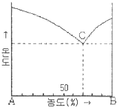
- A-70%, B-30%
- A-30%, B-70%
- A-70%, B-70%
- A-50%, B-50%
(정답률: 74%)
47. 구리판, 알루미늄판 및 기타 연성의 판재를 가압 성형하여 변형 능력을 시험하는 것은?
- 에릭센시험
- 마모시험
- 크리프시험
- 전단시험
(정답률: 63%)
48. 경화능 곡선을 구하여 담금질성을 측정하는 시험법은?
- 조미니시험법(Jominy test)
- 할셀시험법(hall-cell test)
- 시멘테이션법(cementation)
- 설퍼프린트법(sulphur print)
(정답률: 78%)
49. 비금속 개재물의 종류 중에서 가공방향으로 집단을 이루어 불연속적으로 입상의 형태로 뭉쳐 줄지어진 알루민산염 개재물은 어느 그룹 계에 해당되는가?
- 그룹 A계 개재물
- 그룹 B계 개재물
- 그룹 C계 개재물
- 그룹 D계 개재물
(정답률: 51%)
50. 강철 볼(구)을 시편에 압입하였을 때 압입된 자국의 표면적의 단위 면적당의 응력으로 표시하는 경도는?
- 브리넬 경도
- 로크웰 경도
- 쇼어 경도
- 키버스 경도
(정답률: 58%)
51. 재료에 단일 충격값을 주었을 때 충격에 의해 재료가 흡수한 흡수 에너지를 노치부 단면적으로 나눈 값을 무엇이라고 하는가?
- 충격값
- 충격흡수값
- 충격에너지
- 단면수축률
(정답률: 60%)
52. 피검체의 내부 결함은 검출할 수 없고 표면 결함만을 탐상할 수 있는 비파괴 시험법은?
- 침투탐상시험
- 누설탐상검사
- 방사선투과시험
- 초음파탐상시험
(정답률: 71%)
53. 비틀림 곡선의 가로축이 비틀림각을 나타낼 때 세로축이 나타내는 것은?
- 응력
- 토크
- 변형률
- 반복회수
(정답률: 58%)
54. 방사선투과시험에서의 안전 및 유의사항으로 틀린 것은?
- 촬영시에는 접지를 확실히 한다.
- 관전압 상승 속도에 유의하여 탐상기를 사용해야 한다.
- X-선 촬영구역에는 위험 표지판을 설치할 필요가 없다.
- X-선 검사시에는 안전과 관련하여 납(Pb)으로 밀폐된 공간에서 촬영한다.
(정답률: 79%)
55. 압력이 갑자기 발생하거나 개방으로 폭음을 일으키면서 팽창하여 일어나는 경우는?
- 충돌
- 폭발
- 낙하
- 도피
(정답률: 86%)
56. 용접부 내부결함을 찾는 데 좋은 비파괴시험법은?
- 설퍼프린트시험
- 침투탐상시험
- 초음파탐상시험
- 누설비파괴시험
(정답률: 70%)
57. 파단면을 분석할 때 미소 공동의 합체 기구에 의한 연성파면에 미시적인 다수의 웅덩이가 형성되는 것을 무엇이라고 하는가?
- 샘플(sample)
- 패턴(pattern)
- 파단(fracture)
- 딤플(dimple)
(정답률: 73%)
58. 다음 중 로크웰 경도시험에서 압입자로 강구(steel ball)를 사용하는 스케일은?
- A
- B
- C
- D
(정답률: 58%)
59. 굽힘 시험에서 시험편에 대한 설명으로 옳은 것은?
- 제품의 나비가 20mm 이하일 때는 제품의 나비와 같아야 한다.
- 원형, 정사각형, 직사각형, 다각형 등의 단면을 갖지 않는 시험편을 사용한다.
- 관, 띠 및 단면으로부터 만든 시험편의 두께는 시험할 제품의 두께와의 차가 2배 이상이어야 한다.
- 시험편을 채취할 때 전단, 화염 절단 등의 가공 작업에 의해 영향을 받은 부분만을 사용하여야 한다.
(정답률: 56%)
60. 피로시험에서 비틀림 응력과 반복횟수 사이의 관계를 나타낸 곡선은?
- S-N 곡선
- M-S 곡선
- CCT 곡선
- S 곡선
(정답률: 82%)